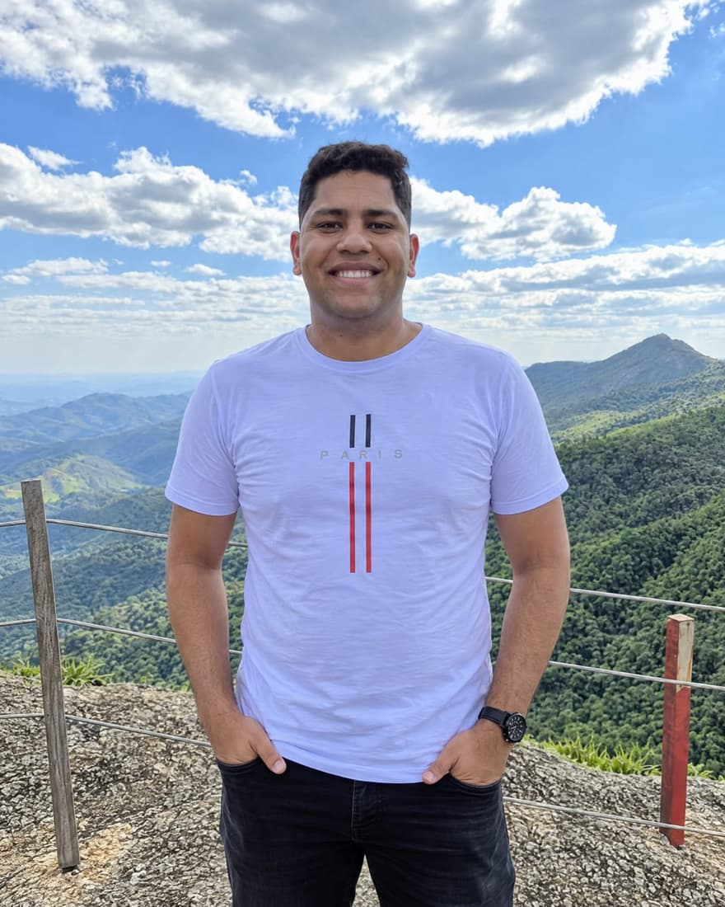

Nicolas Soares dos Santos Chagas | WDD 130

Meu Nome é Nicolas Chagas, mais conhecido como Chagas. Moro na capital de São Paulo,
porém, sou do interior,
de uma cidade chamada Ibiúna.
Sou casado com Rúbia Chagas, a mais de três anos e estamos no aguardo do nascimento
da
nossa pequena Mackenzie, que será nossa primeira filha.
Sou apaixonado por futebol e torço fielmente para o meu Corinthians.